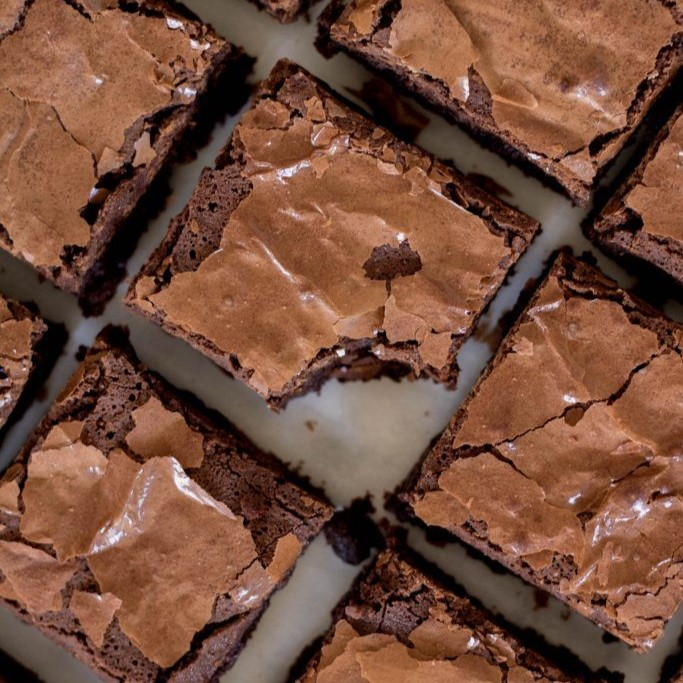

Receita de Brownie
Ingredientes
- 4 ovos
- 2 xícaras de açúcar
- 6 colheres de margarina ou manteiga
- 3/4 xícaras de achocolatado
- 1/2 xícaras de chocolate em pó
- 2 pitadas de sal
- 1 colher de chá de baunilha
- 1 e 1/4 de xícara de farinha de trigo
Modo de Preparo
- Misture o açúcar e os ovos em uma tigela
- Derreta a margarina ou a manteiga no microondas ou panela
- Misture o achocolatado e o chocolate em pó com os ovos e o açúcar já misturados
- Adicione a margarina ou manteiga derretida, o sal e a baunilha na tigela
- Misture tudo e adicione aos poucos a farinha
- Passe um pouco de manteiga e achocolatado em uma forma para não grudar
- Pré-aqueça o forno por 10 minutos a 180 °C
- Adicione a massa do brownie na forma
- Coloque o brownie para assar por 30 minutos a 180 °C
- Após os 30 minutos, deixe o brownie esfriar e sirva em fatias quadradas

Bom apetite!